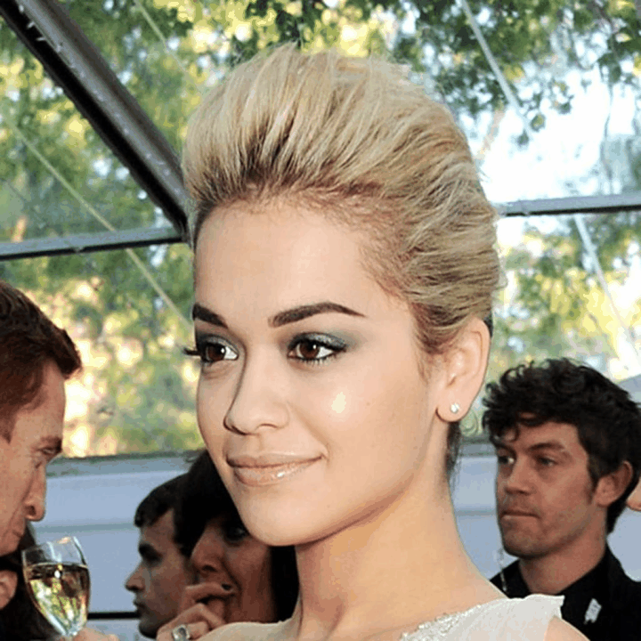
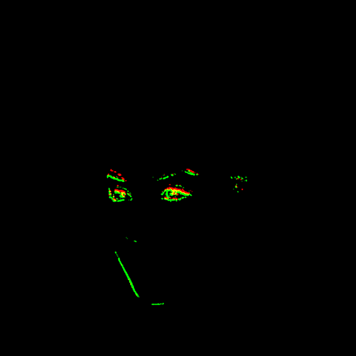
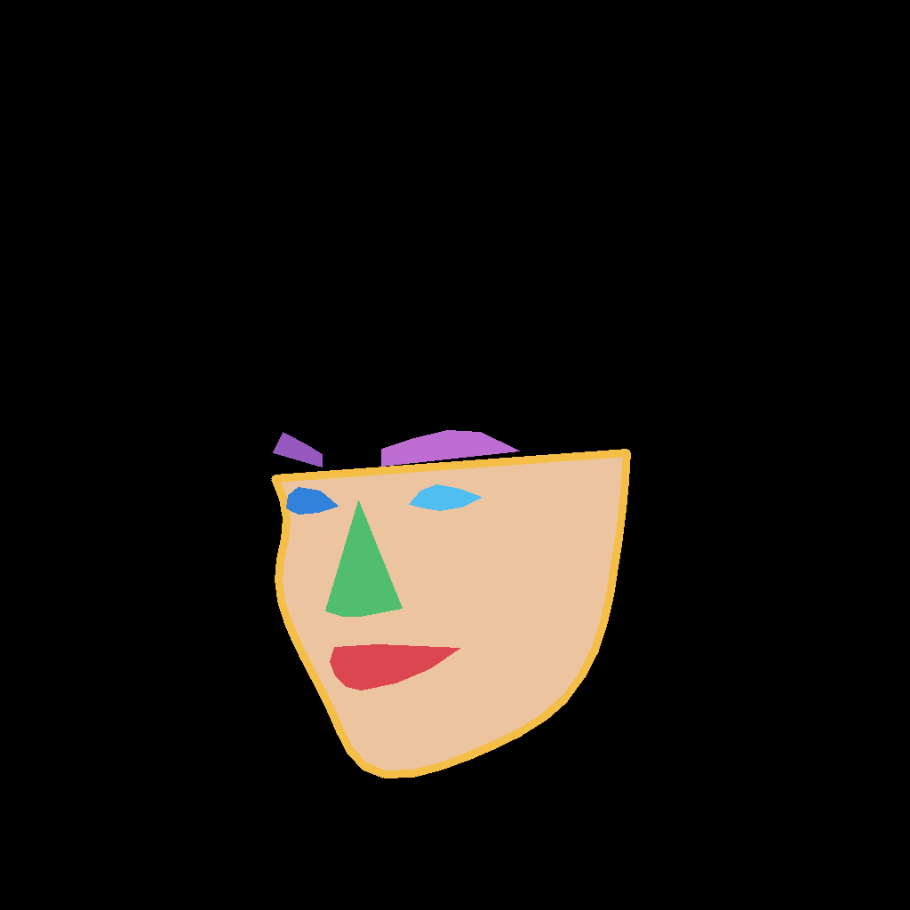
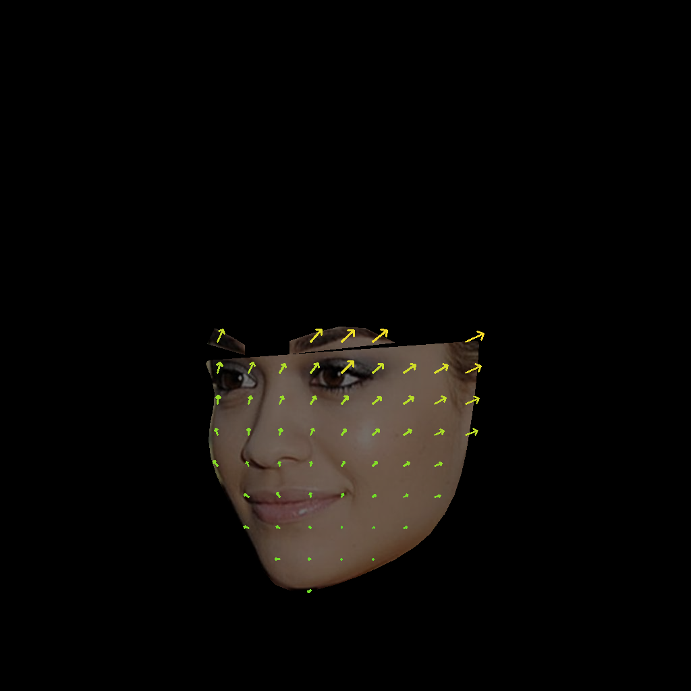
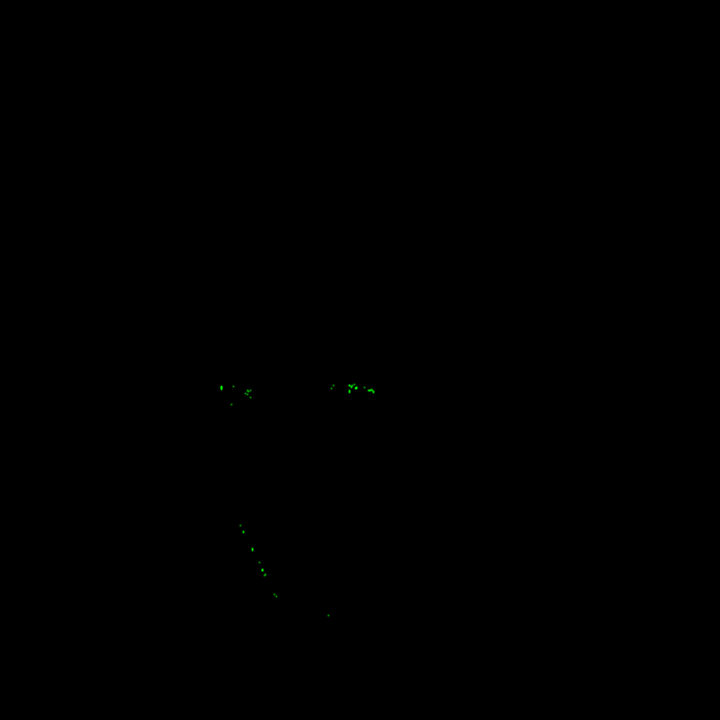

Input A · D3 Driving Video
D3 video는 driving motion source입니다. 연속 frame에서 temporal displacement / motion vector를 추정하는 기준으로 사용합니다.
D3 driving video에서 motion cue를 추출하고, 이를 target portrait sequence에 주입한 뒤 motion-induced temporal change를 event representation으로 변환하는 draft project page입니다.
이 페이지는 전체 idea를 보여주는 overview입니다. 핵심은 d3.mp4를 motion source로 사용하고,
target portrait에 해당 motion을 주입한 뒤, 결과 sequence에서 event stream을 생성하는 것입니다.
D3 video는 driving motion source입니다. 연속 frame에서 temporal displacement / motion vector를 추정하는 기준으로 사용합니다.
추출된 motion cue를 target portrait appearance에 주입하여 생성한 motion-aware sequence입니다.
현재 page의 설명은 draft 수준입니다. 구현 세부는 바뀔 수 있지만, page에서 보여주려는 narrative는 아래 순서로 고정합니다.
D3 video에서 frame-to-frame motion cue를 추출합니다.
motion vector / dense optical flow 형태로 local displacement를 구성합니다.
target portrait image 또는 latent representation에 motion을 주입합니다.
appearance는 유지하면서 D3의 temporal dynamics를 따르는 sequence를 생성합니다.
motion-induced brightness change를 ON/OFF event stream으로 변환합니다.
아래 결과는 motion injection 이후의 temporal 변화와 event generation 결과를 빠르게 확인하기 위한 preview입니다.

Motion field로 portrait region을 warp한 preview입니다.

RGB background 위에 ON/OFF event trail을 누적한 visualization입니다.

배경을 제거하고 event polarity만 검은 배경 위에 표시합니다.
사용자가 보낸 기존 report page를 두 번째 탭으로 통합했습니다. 이 page는 semantic mask 기반 synthetic flow 및 event visualization을 상세히 보여주는 draft report입니다.
semantic_mask_flow/ 경로는 현재 ZIP에 들어있는 실제 asset 경로로 정리했습니다.
얼굴 부위별 polygon / contour를 semantic region으로 변환합니다.
eyes, mouth, eyebrow, jaw 등 region별 synthetic flow를 정의합니다.
Dense flow를 사용해 frame sequence를 생성하고 coherent motion을 확인합니다.
인접 frame의 log-brightness 변화로 ON/OFF event를 생성합니다.
flow overlay, motion preview, event GIF를 통해 결과를 검증합니다.

Landmark polygon으로 만든 얼굴 부위 mask입니다. 이 mask가 region-wise flow 설계의 기준입니다.
0 background 1 skin 2 left_eye 3 right_eye 4 nose 5 mouth 6 left_eyebrow 7 right_eyebrow 8 jaw_or_contour

Semantic region별 synthetic optical flow 방향을 arrow로 표시합니다.
eyes: vertical mouth: open/stretch eyebrows: vertical lift jaw: small shift nose: almost fixed skin: weak drift
Semantic foreground를 중심으로 flow를 적용한 preview입니다.
Event를 보기 전, motion 자체가 자연스럽게 전달되는지 확인하는 용도입니다.
RGB background 위에 ON/OFF event를 누적 trail로 표시한 GIF입니다.
Green은 ON, red는 OFF, yellow는 ON/OFF가 가까운 위치나 시간에서 겹친 결과입니다.
얼굴 RGB와 배경을 제거하고 event만 검은 배경에 표시한 GIF입니다.
Event 위치와 polarity만 검사할 때 가장 명확합니다.

업로드 ZIP의 New folder1에 포함된 event stream output입니다.

동일 output의 black-background event visualization입니다.
기존 report의 수치를 유지했습니다. JSON 파일은 현재 ZIP에 포함되어 있지 않아 HTML 내부 summary로만 보존했습니다.
assets/d3_driving_video.mp4 assets/generated_motion_injected_crop.mp4 assets/semantic_mask.png assets/arbitrary_flow_overlay.png assets/motion_preview.gif assets/event_stream.gif assets/event_stream_black.gif assets/report_event_stream.gif assets/report_event_stream_black.gif